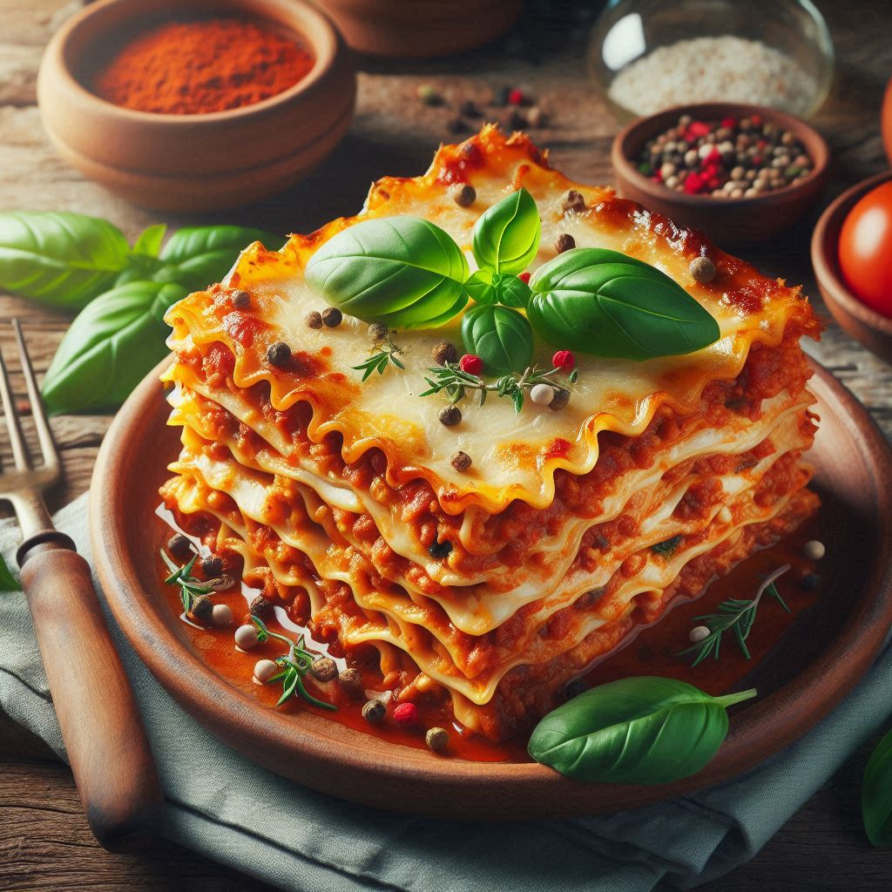

Home
Lasagna

Description
The lasagna in the image is a culinary masterpiece, bursting with
vibrant colors and inviting textures. The golden, slightly crispy
top layer reveals a generous sprinkle of melted mozzarella and
Parmesan cheese, browned to perfection. Below the golden crust
lies a hearty layer of rich, meaty tomato sauce that exudes warmth
and comfort. You can see the well-cooked, glossy lasagna noodles,
meticulously arranged in beautiful, alternating layers. Each slice
promises a harmonious blend of flavors, with the rich tomato sauce
and melted cheese oozing through the layers, inviting you to savor
every bite.
Ingredients
- 1 pound sweet Italian sausage
- 3/4 pound lean ground beef
- 1/2 cup minced onion
- 2 cloves garlic, crushed
- 1 (28 ounce) can crushed tomatoes
- 2 (6 ounce) cans tomato paste
- 2 (6.5 ounce) cans canned tomato sauce
- 1/2 cup water
- 2 tablespoons white sugar
- 1 1/2 teaspoons dried basil leaves
- 1/2 teaspoon fennel seeds
- 1 teaspoon Italian seasoning
- 1 tablespoon salt
- 1/4 teaspoon ground black pepper
- 4 tablespoons chopped fresh parsley
- 12 lasagna noodles
- 16 ounces ricotta cheese
- 1 egg
- 3/4 teaspoon salt
- 3/4 pound mozzarella cheese, sliced
- 3/4 cup grated Parmesan cheese
Steps
- Gather all your ingredients.
-
Cook sausage, ground beef, onion, and garlic in a Dutch oven
over medium heat until well browned.
-
Stir in crushed tomatoes, tomato paste, tomato sauce, and
water.
-
Bring a large pot of lightly salted water to a boil. Cook
lasagna noodles in boiling water for 8 to 10 minutes. Drain
noodles, and rinse with cold water.
-
In a mixing bowl, combine ricotta cheese with egg, remaining
parsley, and 1/2 teaspoon salt.
-
Preheat oven to 375 degrees F (190 degrees C).
-
To assemble, spread 1 1/2 cups of meat sauce in the bottom of
a 9x13-inch baking dish. Arrange 6 noodles lengthwise over meat
sauce, overlapping slightly. Spread with 1/2 of the ricotta
cheese mixture. Top with 1/3 of the mozzarella cheese slices.
Spoon 1 1/2 cups meat sauce over mozzarella, and sprinkle with
1/4 cup Parmesan cheese.
-
Repeat layers, and top with remaining mozzarella and Parmesan
cheese. Cover with foil: to prevent sticking, either spray foil
with cooking spray, or make sure the foil does not touch the
cheese.
-
Bake in preheated oven for 25 minutes. Remove foil, and bake
an additional 25 minutes.
- Rest lasagna for 15 minutes before serving.